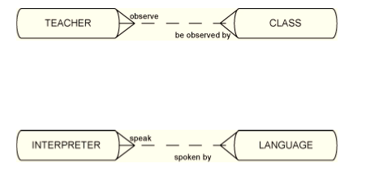
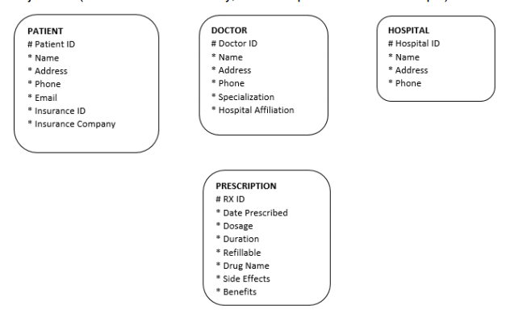

This lab will put into practice relationship transferability, types of relationships and how to deal with many to many relationships you have learned in the lectures.
Draw ERDs for each of the following. Draw softboxes, relationship lines, and labels for each relationship in both directions. Indicate non-transferability when appropriate.
a. Each town may be the birthplace of many people. Each person must be born in one and only one town.
b. Each room may house one or more guests. Each guest may stay in one and only one room.
c. Each employee must work for one and only one department. Each department may have one or more employees.
d. Each hotel may be the host of one or more guests. Each guest may be hosted in one or more hotels.
e. Each message must be addressed to one or more persons. Each person may be the addressee of one or more messages.
f. Each garment must have one and only one price. Each price may be for one or more garments.
g. Each airline coupon must be used for one and only one destination. Each destination may be visited with one or more coupons.
h. Each automobile must use one and only one tire size. Each tire size may be used by one or more automobiles.
i. Each child must have one and only one biological mother. Each mother must be the parent of one or more children.
j. Each person must be of one and only one blood type. Each blood type may classify one or more persons.
k. A person may be on one or more junk-mail lists. Each junk list may contain one or more persons.
l. Each student may learn from one or more teachers. Each teacher may educate one or more students.
m. Each school may be attended by one or more honor students. Each honor student must attend one and only one school.
n. Each fingerprint must belong to one and only one person. Each person must have one and only one fingerprint.
Draw an entity relationship diagram to represent the following:
Resolve the M:M between TEACHER and CLASS as well as INTERPRETER and LANGUAGE.
For each intersection entity, think of additional attributes like a UID.

Continue to work on the business description from lab03 in the Exercises step. You should have a first draft ER diagram which contains the entities you have identified.
You should have entities similar to below:

Next you want to track the visits a patient makes to their doctor. Some patient visits are related to a new issue/illness, some are follow up visits to an existing diagnosis and some visits are routine “well patient” visits or checkups. We would like to be able to track which type of visit each instance is so we can keep specific information regarding the visit.
For example :
Modify the ERD using a supertype/subtype structure within the Office Visit entity.
Next you need to identify the relationships that exist between these entities.
Make sure you have the following relationship identified and drawn on your diagram:
Some relationships will be transferrable and some non-transferrable – be sure to illustrate this point on the ERD. For example once a prescription is written for a patient it cannot be transferred to another patient.
The possible relationship types are : 1-to-1, 1-to-many and many-to-many.
Any many-to-many relationships will need to be resolved. For example each doctor may be affiliated with many hospitals and each hospital may have many doctors affiliated with it. We need to make sure the many-to-many relationships are resolved.
Modify your diagram to include the relationships and resolve any many to many relationships.
Draw an EER for the following business scenario:
Ringit is a phone repair shop in Dundrum, Co. Dublin. It repairs all makes of standard landline and mobile phones for its customers. It has six qualified technicians who fix the phones. For each phone they store the phone number and phone make and the service provider, i.e. Vodaphone/O2 etc. For mobile phones it stores its camera specifications and its memory size. When a customer leaves in a phone for repair they fill out a repair request form. Each repair request form has a unique reference number. This form must state a brief description of the fault, and the date the phone was left in. When the phone is eventually fixed, the fix date is recorded on the form. The customer is then notified thus we need to store the name, address and contact number of each customer. Sometimes the phone needs to be sent back to the manufacturer so the name, address and contact telephone numbers of each manufacturer is stored as well as the date the phone was sent to the manufacturer. Some problem phones may be returned to the shop or the manufacturer for repair a number of times. Every time a phone is returned to the shop, a new repair request from is assigned to it. The technicians’ IDs, names, salaries and addresses are also stored.
Identify any transferability in relationships that should be noted. Also resolve any many to many relationships.